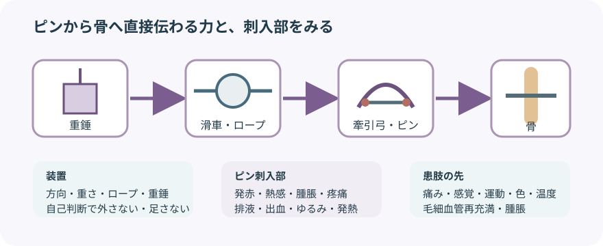

直達牽引と介達牽引の違い

直達牽引は骨へ直接力を伝える
- 力の経路：重錘 → ロープ → 牽引弓 → ピン・鋼線 → 骨
- 重点観察：装置、刺入部、末梢神経血管、長期臥床の影響
- 介達牽引：皮膚へ装着した牽引具から軟部組織を介して力を伝える
- 骨折部の整復・安静や手術までの一時的な安定化などに用いられる。
- 刺入位置、牽引方向、期間は病態と治療計画で異なる。
開始時に基準をそろえる
- 指示：部位、方向、重量、肢位、安静度、刺入部処置、観察間隔、移動方法
- 患者：本人確認、説明、痛み、鎮痛効果、理解、不安
- 患肢：左右の皮膚色・温度・腫脹、感覚、運動、毛細血管再充満、必要時の末梢脈拍
- 刺入部：出血、排液、発赤、腫脹、熱感、疼痛、皮膚への張力、ドレッシング
- 装置：ピン・牽引弓、ロープ、滑車、重錘、支持具、対抗牽引
牽引装置を一本の線でたどる
- 患者と患肢の位置
- 身体がずれず、指示された肢位と牽引方向が保たれているか。
- 踵や骨突出部が圧迫されていないか。
- ピンと牽引弓
- ピン・鋼線のゆるみ、変形、位置変化がないか。
- 牽引弓が周囲へ接触せず、器材の構造どおり保たれているか。
- 皮膚がピンに引かれて強く張っていないか。
- ロープと滑車
- ロープが滑車の溝にあり、寝具・ベッド柵・物品へ触れていないか。
- 結び目が滑車へ当たらず、力の方向がずれていないか。
- 重錘
- 指示された重さか。
- 床、ベッド、壁に触れず自由に下がっているか。
- 確認後の患者
- 痛みと末梢神経血管所見を再確認する。
- 装置の変化と症状の時間関係を記録する。
ピンと牽引力を自己判断で操作しない
- 重錘を外す、足す、持ち上げ続ける操作をしない。
- ピン・鋼線・牽引弓を回す、締める、位置を変える操作をしない。
- 移乗や検査で変更が必要な場合は、整形外科チームと方法・人数を先に確認する。
ピン刺入部を観察する
- 局所：発赤の範囲、熱感、腫脹、圧痛、自発痛、出血、排液の量・色・におい
- 固定：ドレッシングの湿潤・汚染、皮膚への張力、ピン・鋼線・牽引弓の変化
- 全身：体温、悪寒、倦怠感、食欲、炎症反応など指示された検査
- 経過：前回からの広がり、痛みの増加、排液の変化、荷重や動作との関係
末梢神経血管を観察する
- 痛み：部位、強さ、増え方、鎮痛薬への反応、他動運動での増悪
- 感覚：しびれ、ピリピリ感、感覚低下、健側との差
- 運動：足趾・足関節など指示範囲の自動運動、動かしにくさ
- 循環：皮膚色、温度、毛細血管再充満、腫脹、必要時の末梢脈拍
- 患肢全体：緊満、変形、肢位、出血、皮膚障害、支持具による圧迫
長期臥床の影響を減らす
- 皮膚：踵、仙骨、肩甲部などを観察し、牽引を崩さない除圧方法を選ぶ。
- 呼吸：呼吸状態を観察し、許可範囲で深呼吸・排痰・体位調整を支援する。
- 循環：静脈血栓塞栓症のリスク、下肢腫脹、胸痛、呼吸困難をみる。
- 運動：許可範囲の健側・上肢運動、等尺性運動、関節運動を支援する。
- 生活：食事・水分、排泄、睡眠、清潔、せん妄、不安、セルフケアを整える。
- 理学療法、血栓予防、離床範囲は個別の治療計画に従う。
- 牽引を守ることと、動かさないことは同じではない。
すぐ共有する変化
- 急に強くなる痛み、鎮痛しても軽減しない痛み
- 他動運動で増悪する痛み、緊満した腫脹
- 新しいしびれ、感覚低下、運動低下
- 蒼白、チアノーゼ、冷感、毛細血管再充満の遅れ、末梢脈拍の変化
- 刺入部の広がる発赤、熱感、腫脹、膿性排液、悪臭、増悪する疼痛
- 発熱・悪寒・全身倦怠感など感染を疑う変化
- 刺入部出血の増加、ピン・鋼線・牽引弓のゆるみや変形
- 装置の外れ、ロープの脱落、重錘の接地、患者の大きなずれ
- 呼吸困難、胸痛、意識変化などの全身急変
報告・記録
- 牽引の種類、刺入部位、方向、重量、肢位、装着・確認時刻
- 患者の位置、ピン・牽引弓、ロープ、滑車、重錘の状態
- 痛み、感覚、運動、皮膚色、温度、毛細血管再充満、腫脹、末梢脈拍
- 刺入部の発赤・熱感・腫脹・疼痛・出血・排液、処置内容
- 全身状態、皮膚・呼吸・循環・排泄・活動、行った予防ケア
- 異常所見、報告先、指示、対応、対応後の変化